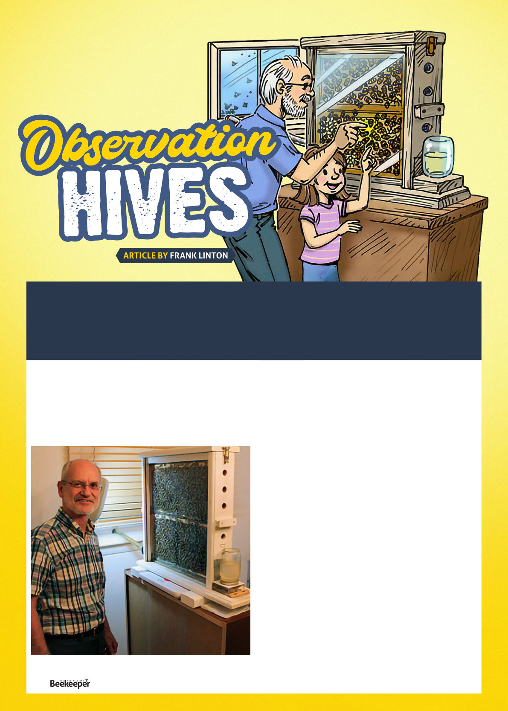

ARTICLE BY FRANK LINTON
Beekeeping is a knowledge-intensive activity. You can no more become an
expert beekeeper by inspecting a few colonies every ten days than you can learn
a language by taking a class every ten days, or get into shape by going to the gym
every 10 days. And until you have learned enough to enable your colonies to
flourish, they won’t.
It is not necessary, though, for your colonies to suffer while
you learn from them. There is a better way to vastly increase
your facetime with honey bees and your knowledge of them.
By installing a glass observation beehive in your home or office
you can see what your bees are doing all day, every day, every
season, all year round (Figure 1). You can see what, and how,
and when they do each of the myriad activities that honey bees
engage in. And by taking this step you will position yourself to
learn a lot about bees; you will become a better beekeeper –
almost automatically.
As beekeeper Michael Bush puts it “Every beekeeper should
have an observation hive. Not only for what you will learn
about bees, but for what you can tell, day to day, about what
is happening in your other hives”.
You might think that installing an observation hive in your
house (or in your office, or garage, or on your deck) is a lot of
work. But it doesn’t have to be. And hive inspections could
not be easier, the hive is transparent! When the hive does need
work, you close it up and take it outside. So, as long as you
ensure that it is easy to close and easy to move, you are all set.
I suggest you purchase your first observation hive. Later,
you may want to design and build your own hive. There are
many sizes and qualities to choose from on the market. I
strongly suggest you select an observation hive that uses the
same frames as the ones you use in your other hives, to make
exchanging them easy. Also, I strongly recommend that you
select an observation hive that is only one frame wide. If the
hive is two frames wide, the activities you most want to see will
take place between the frames, hidden from you. Remember,
the purpose of this hive is your education, not honey produc-
tion, so making the bees’ activities as visible as possible is
the goal when selecting your observation hive. For the same
reason, the bee space between the comb and the glass should
not be excessive as you cannot see events in the comb beneath
• Figure 1. An observation hive in a beekeeper’s home.
28 |
| Vol. 127 | No. 4